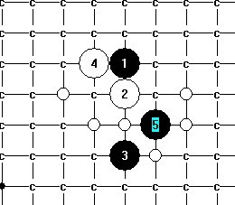
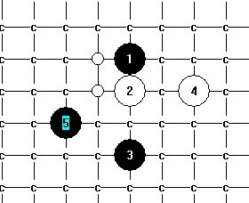
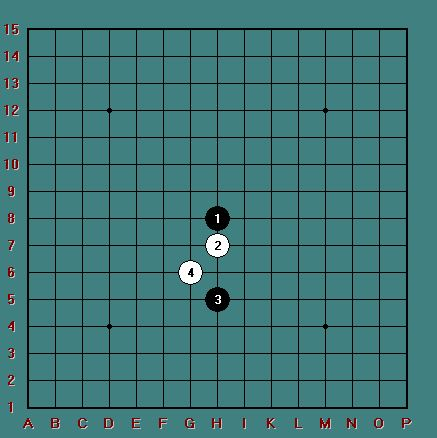

又两个五 进度
#1 又两个五 进度作者：安娜制作所 发表时间：2010-12-8 8:00:51
［此帖子已被 安娜制作所 在 2010-12-8 8:01:23 编辑过］
［此帖子已被 安娜制作所 在 2010-12-8 8:02:10 编辑过］
#2 Re:又两个五 进度作者：日月丽天 发表时间：2010-12-8 8:46:21
这个4地毯起来应该不难啊#3 Re:又两个五 进度作者：日月丽天 发表时间：2010-12-8 8:48:10
=======上图对应的爱五子棋谱代码如下，以便你拆解：========
h8h7h5g8i6g6i7g5g7i8j9
=======================
=======上图对应的爱五子棋谱代码如下，以便你拆解：========
h8h7h5g8i6g6i7j7i8i5g9f10i9i10l6
=====================================================================================
［ 安娜制作所 于 2010-12-8 9:24:05 时花20金币送鲜花一朵］
#4 Re:又两个五 进度作者：日月丽天 发表时间：2010-12-8 8:49:59
=======上图对应的爱五子棋谱代码如下，以便你拆解：========
h8h7h5g8i6j7g7f7f6e5i7
======================================================
=======上图对应的爱五子棋谱代码如下，以便你拆解：========
h8h7h5g8i6j7g7j6i5j4j5g5i4i3f6e5f8f7g9
======================================================
#5 Re:又两个五 进度作者：日月丽天 发表时间：2010-12-8 8:52:39
=======上图对应的爱五子棋谱代码如下，以便你拆解：========
h8h7h5g8i6j6j7g4i9
======================================================
=======上图对应的爱五子棋谱代码如下，以便你拆解：========
h8h7h5g8i6f7i7
======================
=======上图对应的爱五子棋谱代码如下，以便你拆解：========
h8h7h5g8i6i5j7k8j6h6j4
======================================================================================
［ 安娜制作所 于 2010-12-8 9:24:22 时花20金币送鲜花一朵］
［ 逆刃 于 2010-12-8 10:02:54 时花20金币送鲜花一朵］
［ 失落刀 于 2010-12-10 18:52:20 时奖励此帖[金币加 100 威望加1］
#6 Re:又两个五 进度作者：日月丽天 发表时间：2010-12-8 8:56:01
来点鲜花，再给你一块整另一个4的剩余两点#7 Re:又两个五 进度作者：日月丽天 发表时间：2010-12-8 10:45:05
N1IO5A)(L52H34.jpg)
［此帖子已被 日月丽天 在 2010-12-8 11:30:00 编辑过］
#8 Re:又两个五 进度作者：日月丽天 发表时间：2010-12-8 11:03:36


［此帖子已被 日月丽天 在 2010-12-8 11:30:29 编辑过］
#9 Re:又两个五 进度作者：安娜制作所 发表时间：2010-12-8 11:24:17
7,8楼没图, 没花! haha#10 Re:又两个五 进度作者：日月丽天 发表时间：2010-12-8 11:26:51
=======上图对应的爱五子棋谱代码如下，以便你拆解：========
h8h7h5j7f6g8g7e5f9
======================================================
=======上图对应的爱五子棋谱代码如下，以便你拆解：========
h8h7h5j7f6g7f7
======================================================
［此帖子已被 日月丽天 在 2010-12-8 11:33:28 编辑过］
［ 安娜制作所 于 2010-12-8 13:26:19 时花20金币送鲜花一朵］
#11 Re:又两个五 进度作者：左伟光 发表时间：2010-12-8 11:31:07
娜娜最近真是勤快，回头我把这4的地毯谱给你哈哈 不过还没做出，等忙完了做完发给你#12 Re:又两个五 进度作者：日月丽天 发表时间：2010-12-8 11:40:25
我这里看到有，你那里就看不到有，郁闷，7楼，8楼发的是两个6的地毯图片#13 Re:又两个五 进度作者：冥王哈迪斯 发表时间：2010-12-8 11:46:59
那你直接发出来吧日月，，这个点，，感觉不算很强，，大家一起学习学习
#14 Re:又两个五 进度作者：陈唯一 发表时间：2010-12-8 12:29:56
=======上图对应的爱五子棋谱代码如下，以便你拆解：========
h8h7h5g8i6g6i7g5g7j7
======================================================这个才强吧
#15 Re:又两个五 进度作者：陈唯一 发表时间：2010-12-8 12:31:03
=======上图对应的爱五子棋谱代码如下，以便你拆解：========
h8h7h5g8i6g6i7g5g4j7h3f5i8i5g9j6h10
======================================================这个九弑
#16 Re:又两个五 进度作者：陈唯一 发表时间：2010-12-8 12:34:32
=======上图对应的爱五子棋谱代码如下，以便你拆解：========
h8h7h5g8i6j7g7j6f6e5i4j5j4g6i8
======================================================这样也弑
#17 Re:又两个五 进度作者：陈唯一 发表时间：2010-12-8 12:37:29
=======上图对应的爱五子棋谱代码如下，以便你拆解：========
h8h7h5g8i6h6g7
======================================================通
=======上图对应的爱五子棋谱代码如下，以便你拆解：========
h8h7g7g8i6h6h5
======================================================
花月必胜
#18 Re:又两个五 进度作者：陈唯一 发表时间：2010-12-8 12:42:12
=======上图对应的爱五子棋谱代码如下，以便你拆解：========
h8h7h5g8i6h6g6
======================================================通
=======上图对应的爱五子棋谱代码如下，以便你拆解：========
h8g8g6h7i6h6h5
======================================================通
=======上图对应的爱五子棋谱代码如下，以便你拆解：========
h8h7g6g8i6h6h5
======================================================
溪残月必胜
#19 Re:又两个五 进度作者：日月丽天 发表时间：2010-12-8 12:53:29
=======上图对应的爱五子棋谱代码如下，以便你拆解：========
h8h7h5g8i6g6i7g5g7j7f5i5i9j10j6k5e9
======================================================回14楼唯一
#20 Re:又两个五 进度作者：陈唯一 发表时间：2010-12-8 12:56:47
19楼的17没想到谢谢#21 Re:又两个五 进度作者：日月丽天 发表时间：2010-12-8 13:02:01
=======上图对应的爱五子棋谱代码如下，以便你拆解：========
h8h7h5g8i6g6g7
======================================================其实这个7，也可以简单杀
#22 Re:又两个五 进度作者：安娜制作所 发表时间：2010-12-11 8:09:35
嗯,前面的打完了!下图现在有胜五了吗?#23 Re:Re:又两个五 进度作者：安娜制作所 发表时间：2010-12-11 8:10:26
=======上图对应的爱五子棋谱代码如下，以便你拆解：========
h8h7h5g7
======================================================
#24 Re:又两个五 进度作者：日月丽天 发表时间：2010-12-11 11:13:00
=======上图对应的爱五子棋谱代码如下，以便你拆解：========
h8h7h5g7f7a1i7
======================================================先做吧
#25 Re:又两个五 进度作者：安娜制作所 发表时间：2010-12-11 12:05:41
hao#26 Re:又两个五 进度作者：死劲哭 发表时间：2011-1-27 16:50:41
这个 4 不好吗？［此帖子已被 死劲哭 在 2011-1-27 16:51:31 编辑过］
#27 Re:又两个五 进度作者：八了个卦 发表时间：2012-8-3 10:49:57
顶！菜鸟路过...#28 Re:又两个五 进度作者：青蛙公主 发表时间：2012-12-9 16:03:16
#29 Re:又两个五 进度作者：虎哥 发表时间：2012-12-9 18:23:05
一直很纠结，不同版块的习惯貌似不一样。抛却实战的战术不讲，作为规范，我习惯上将第2手放在上面，难道是我一直搞反了。。求达人解惑……
［ 日月丽天 于 2012-12-10 13:58:04 时花20金币送鲜花一朵］